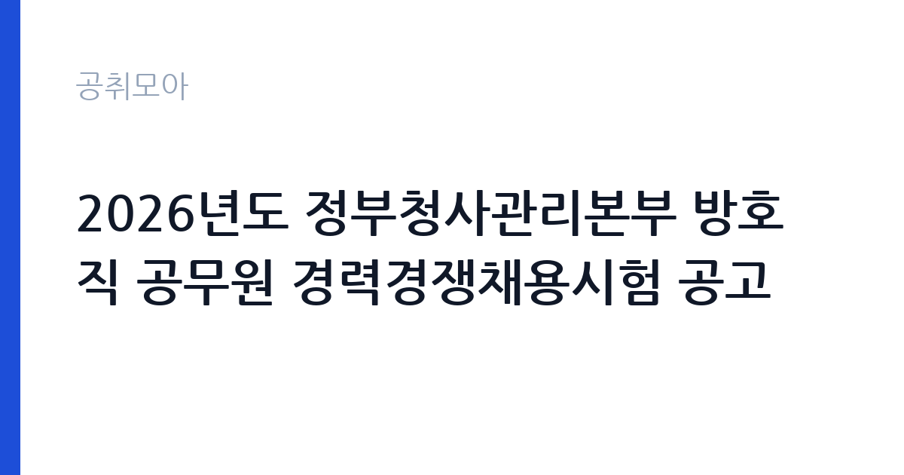

[국가기관] 2026년도 정부청사관리본부 방호직 공무원 경력경쟁채용시험 공고
행정안전부 정부청사관리본부 · 서울 · 마감 2026-10-22 (D-10) · 출처 나라일터

한눈에 보는 모집 조건
| 기관 | 행정안전부 정부청사관리본부 |
|---|---|
| 공고명 | 2026년도 정부청사관리본부 방호직 공무원 경력경쟁채용시험 공고 |
| 고용형태 | 정규직 |
| 근무지 | 서울 |
| 게시일 | 2026-10-12 |
| 마감일 | 2026-10-22 (D-10) |
지원자격, 이렇게 읽으세요
- 방호서기보 6명
- 접수 ~2026-10-22 마감
- 세부 조건은 원문 공고문 확인
세부 응시자격은 붙임 공고문 파일을 반드시 확인하시기 바랍니다. 방호직 경력경쟁채용은 방호와 경비, 안전 관련 경력과 자격, 무도 단증과 체력 관련 요건을 조합해 응시자격을 정하는 경우가 많습니다. 지원 시 주의하실 점은 접수 방식과 기간입니다. 접수 기간이 10월 20일부터 22일까지 3일간으로 매우 짧고 등기우편 접수만 가능하므로, 마감일 발송으로는 도착이 늦어질 수 있습니다. 접수 첫날이나 둘째 날 발송을 권장하며, 등기 발송 증빙을 보관하시기 바랍니다. 서울과 대전 중 1개 청사만 선택해 지원해야 하는 경우가 많으므로, 중복 지원 가능 여부를 공고문에서 확인하시기 바랍니다. 담당 부서 연락처는 서울청사관리소 02-2100-4517과 대전청사관리소 042-481-6006입니다.
이 공고의 포인트
해당 공고의 첫 번째 포인트는 9급 상당 국가공무원 신분입니다. 방호서기보로 임용되면 정년이 보장되는 국가공무원이 됩니다. 두 번째 포인트는 선발 규모 6명 중 서울 4명이라는 점입니다. 수도권 근무를 희망하는 방호와 경비 분야 경력자에게 반가운 구성입니다. 세 번째 포인트는 체력시험이 포함된 실기형 전형입니다. 필기시험 부담이 상대적으로 적고 체력과 실무 적성을 중심으로 선발하므로, 현장 경력자에게 유리한 구조입니다. 네 번째 포인트는 접수 경쟁의 변수입니다. 접수 기간이 3일로 짧고 등기우편만 가능해 준비된 지원자 위주로 접수되므로, 서류를 갖춘 분들께는 실질 경쟁이 완화될 수 있습니다.
전형은 어떻게 진행되나
선발 방법은 서류심사와 체력시험, 면접시험의 순서로 진행됩니다. 1차 서류심사 합격자에 한해 2차 체력시험을 시행하며, 세부 사항은 별도 공지됩니다. 체력시험은 과거 공고 기준으로 악력과 제자리멀리뛰기, 윗몸일으키기, 왕복오래달리기 4종목으로 측정되며, 종목별 기준표에 따라 점수를 부여하는 방식입니다. 이번 채용의 측정 종목과 합격 기준은 붙임 공고문과 별첨 기준표에서 반드시 확인하시기 바랍니다. 3차 면접시험에서는 공무원으로서의 자세와 방호 직무 수행 적격성을 평가하며, 이후 신원조회 절차를 거쳐 임용됩니다. 접수 기간이 10월 20일부터 22일까지이므로, 체력 단련과 서류 준비를 지금부터 병행하시기 바랍니다.
원문에서 확인한 전형 방식
[행정안전부 공고 제2026-1284호] 2026년도 정부청사관리본부 방호직 공무원 경력경쟁채용시험을 붙임과 같이 공고합니다. ○ (채용분야) 방호서기보(서울 4명 / 대전 2명) ○ (접수기간) 2026. 10 .20.(화) ~ 10. 22.(목) / 3일간 ○ (접수방법) 등기우편 접수 ○ (선발방법) 경력경쟁채용시험(서류심사, 실기시험, 면접시험) ○ 담당부서(연락처) - 서울청사관리소: 02-2100-4517 - 대전청사관리소: 042-481-6006 ※ 자세한 내용은 붙임 파일을 참조하시기 바랍니다. 2026년 10월 12일 정부청사관리본부장
이런 분께 추천해요
- 방호와 경비, 시설보안 현장 경력이 있어 국가공무원으로 안착하고 싶은 분께 추천합니다.
- 체력에 자신이 있고 실기형 전형에서 강점을 발휘할 수 있는 분께 추천합니다.
- 서울과 대전 정부청사 근무를 희망하며 교대와 순찰 근무 적응이 가능한 분께 추천합니다.
지원 전 체크리스트
- 응시자격 원문 확인 항목입니다. 붙임 공고문의 자격요건과 우대 조건을 반드시 확인하시기 바랍니다.
- 등기우편 조기 발송 항목입니다. 접수 기간 3일 중 첫날이나 둘째 날 발송을 권장합니다.
- 체력시험 대비 항목입니다. 측정 종목과 기준표를 확인해 지금부터 단련하시기 바랍니다.
- 근무지 선택 항목입니다. 서울과 대전 중 지원 가능한 청사와 중복 지원 가능 여부를 확인하시기 바랍니다.
모집 일정과 제출 타이밍
공고 게시일은 2026년 10월 12일이며 접수 기간은 10월 20일부터 10월 22일까지 3일간입니다. 접수는 등기우편으로만 가능하므로 발송 일정을 역산해 서류를 준비하시기 바랍니다. 11월에 1차 서류심사와 2차 체력시험, 12월에 3차 면접심사와 신원조회를 거쳐 임용하는 일정이 예상되나, 확정 일정은 정부청사관리본부와 나라일터 공지를 확인하시기 바랍니다.
직무 이해하기: 국가기관
방호서기보의 실무를 이해하면 지원 동기와 면접 준비가 수월해집니다. 정부청사 방호직은 청사 출입자 통제와 출입증 확인, 청사 내외 순찰, 비상 상황 초동 대응 업무를 맡습니다. 정부청사는 주요 국가 시설이므로 보안 의식과 절차 준수가 핵심이며, 야간과 휴일 당직, 교대 근무가 포함됩니다. 집회와 시위, 재난과 화재 같은 비상 상황에 대응하는 훈련도 정기적으로 시행됩니다. 민원인과 청사 입주 직원을 상대하므로 단호하면서도 친절한 응대 태도가 요구됩니다. 체력과 책임감이 뒷받침되어야 하는 현장 중심 직무입니다.
자기소개서 작성 팁
자기소개서는 방호와 경비, 안전 관련 실무 경험을 중심으로 서술하는 것이 핵심입니다. 근무했던 시설의 규모와 담당 구역, 비상 상황 대응 사례, 보안 절차 개선 경험처럼 구체적인 내용을 적시하시기 바랍니다. 지원 동기에서는 국가 중요 시설 방호라는 공적 임무에 대한 책임감을 진정성 있게 서술하시기 바랍니다. 체력 관리 습관과 교대 근무 적응 경험을 언급하면 직무 적격성을 보여줄 수 있습니다. 청사관리본부의 역할과 지원 청사의 특성을 조사해 언급하면 기관 이해도를 어필할 수 있습니다. 간결하고 사실 중심으로 작성하시기 바랍니다.
면접 준비 포인트
면접에서는 방호 직무 적격성과 공무원으로서의 자세가 핵심 평가 요소입니다. 비상 상황 대응 절차를 묻는 질문에는 침착한 초동 조치와 보고 체계 준수 순서로 답변하시기 바랍니다. 청사 출입을 강행하는 민원인 같은 돌발 상황을 묻는다면 원칙 준수와 안전 확보를 우선으로 답변하시기 바랍니다. 체력시험 통과 이후의 면접이므로 체력 자신감을 자연스럽게 보여주시는 것이 좋습니다. 교대와 당직 근무에 대한 수용 의지, 보안 규정 준수 의식을 명확히 밝히시기 바랍니다. 방호 현장 경험자는 실제 사례를 절차 중심으로 답변하시기 바랍니다.
급여·근무조건 읽는 법
급여 수준은 공무원보수규정 봉급표로 확인할 수 있습니다. 방호서기보는 9급 상당 공무원으로 2026년 9급 1호봉 기본급은 월 2,133,000원입니다. 일반직과 공안직 9급 1호봉 금액이 동일하며, 실제 초임호봉은 개인의 경력과 병역 복무 기간 환산에 따라 획정됩니다. 기본급에 정액급식비와 직급보조비, 명절휴가비, 초과근무수당 등이 더해져 세전 총보수가 정해지며, 참고로 2026년 9급 초임의 수당 포함 연 보수는 약 3,428만원으로 발표된 바 있습니다. 방호직의 직종별 봉급 적용과 위험근무수당 등 특수 수당 지급 여부는 원문 공고문과 공무원보수규정에서 확인하시기 바랍니다. 실수령액은 연금 기여금과 세금 공제 후 금액입니다. 출처는 인사혁신처 2026년 공무원봉급표와 보수 인상 보도자료입니다.
자주 묻는 질문
- 방호서기보의 정년이 보장됩니까?
국가공무원으로 임용되므로 국가공무원법상 정년이 적용됩니다. 방호서기보는 9급 상당 직급입니다. - 등기우편 접수 시 마감일 소인도 유효합니까?
도착 기준인지 소인 기준인지에 따라 유효 여부가 달라지므로 붙임 공고문의 접수 유의사항을 반드시 확인하시기 바랍니다. 가급적 접수 초반에 발송하시기 바랍니다. - 체력시험 종목은 무엇입니까?
과거 공고 기준으로 악력과 제자리멀리뛰기, 윗몸일으키기, 왕복오래달리기 4종목이 측정되었습니다. 이번 채용의 확정 종목과 기준표는 붙임 파일에서 확인하시기 바랍니다.
함께 보면 좋은 공고
[국가기관] 2026년도 제3회 양구우체국 상시계약집배원(계약직) 채용 재공고 — 마감 2026-10-19[국가기관] 2026년도 국가공무원 경력경쟁채용(공업9급) 공고 — 마감 2026-10-23[국가기관] 2026년 제7회 인천우체국 주관 기간제근로자(상시계약집배원)채용 공고(인천운남동우체국) — 마감 2026-10-19출처: 나라일터 공개정보를 바탕으로 공취모아가 정리한 안내글입니다. 모집 조건·일정은 변경될 수 있으니 지원 전 반드시 원문 공고문을 확인하세요. 본 글은 정보 제공용이며 합격을 보장하지 않습니다.